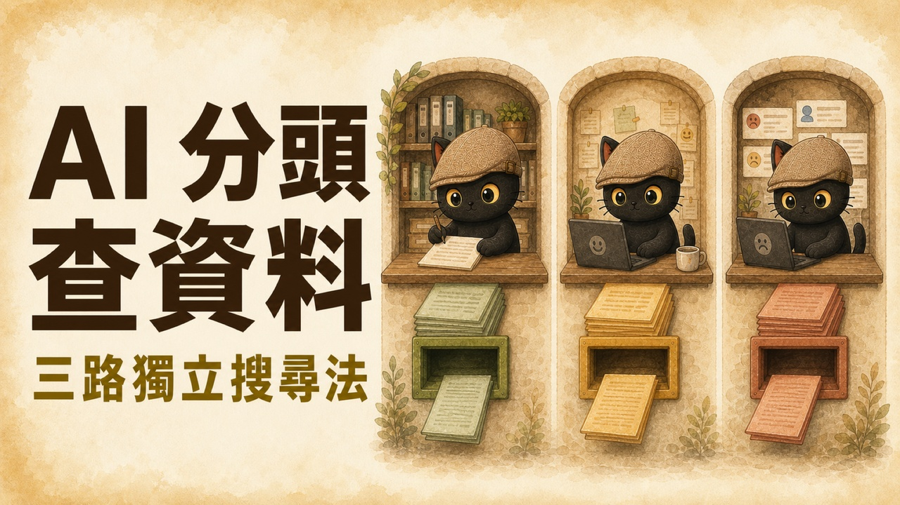
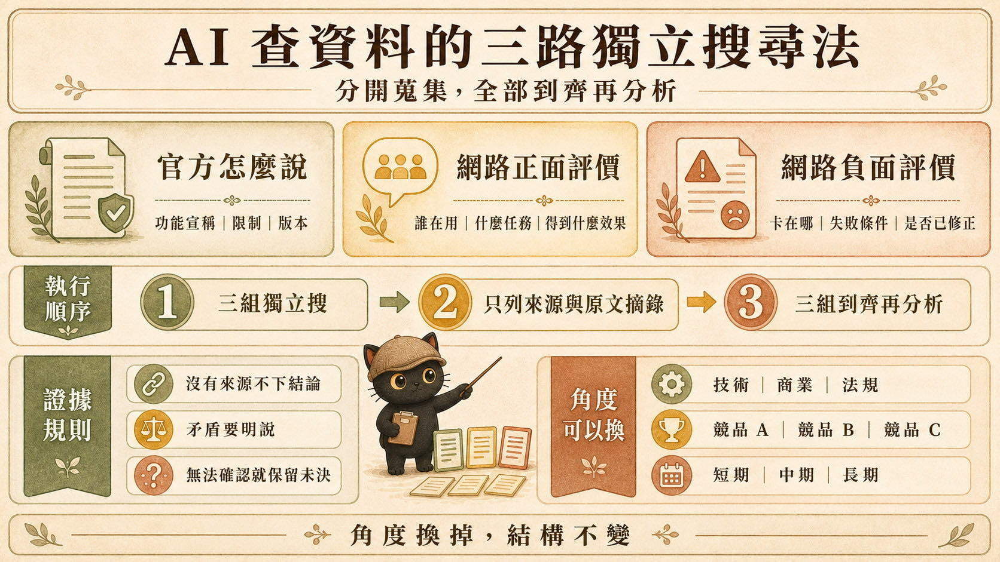
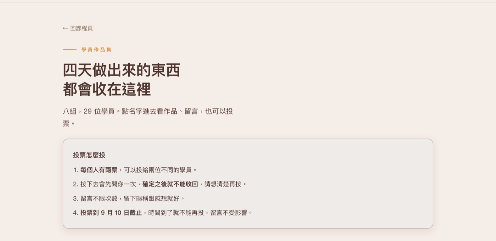
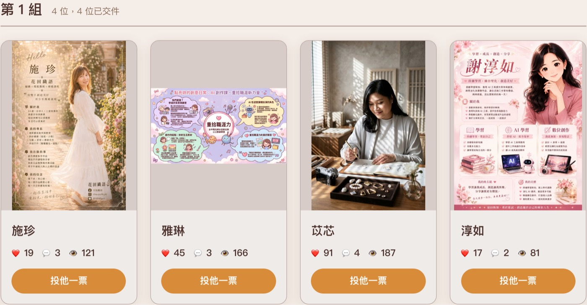

官方怎麼說
- 產品宣稱能做什麼
- 支援平台、方案與條件
- 限制、例外與已知問題
- 發布日期與適用版本
讓 Agent 開分身，分頭工作，最後再一起整併。兩個案例帶你看懂：怎麼用獨立研究保留矛盾，又怎麼把大量同版型任務拆成幾批完成。

子代理就是讓 Agent 開分身，分頭進行工作，最後再一起整併。這篇用兩個我實際採用的案例說明：第一個是把官方說法、網路正面評價、網路負面評價分開搜尋；第二個是替約 30 位工作坊學員製作同版型的獨立頁面。

簡單來說，就是讓 Agent 開分身，分頭進行工作，最後再一起整併。
主 Agent 負責拆任務、分配工作、收回結果與最後整合。每一隻子代理只處理自己拿到的部分。只要任務可以清楚切開，就能讓多個工作同時往前走。
讓每組獨立研究，避免先看到其他組的結論。重點是保留觀點差異與矛盾。
把固定版型與個別資料交給不同子代理。重點是分批並行、統一驗收。
問 AI 某個工具好不好用時，它很可能先找到官方網站、產品文件或發布文章。官方資料適合建立產品承諾的基準，實際使用經驗則要另外找。我的做法是把搜尋拆成三組，先讓它們各查各的。
查某某主題，分三次獨立搜，不要合併 1 官方怎麼說 2 網路正面評價 3 網路負面評價 每一組只列來源與原文摘錄，先不要分析 三組都給我之後我們再一起看 沒有來源不准下結論 來源互相矛盾的時候要明說矛盾在哪 不准硬整合成一個好聽的版本
三組角度也可以替換成技術面、商業面、法規面；競品 A、B、C；或短期、中期、長期。結構維持一致：各組獨立、每項有來源、矛盾明確保留。
我有一個約 30 人的工作坊。成果發表需要一個總頁，另外每位學員都有自己的獨立頁面。每個人的內容不同，頁面模板相同，這類任務很適合分批並行。
做出來的成果頁在這裡：數位起步走 學員作品集 ↗。八組、29 位學員，每個人都有自己的頁面，總頁負責分組導覽、投票與留言。

以每批 10 頁為例，30 位學員可以拆成 3 批。實際每批放幾頁，會依當時使用的工具、任務複雜度與可用資源調整。
欄位、版型、導覽與檔名一次定清楚。
姓名、作業內容與素材只放進自己的資料包。
每隻子代理只處理指定名單，不自行換模板。
收回頁面，接上總頁、導覽與相互連結。
檢查版型一致、內容未混用、必要欄位未漏。

你是工作坊學員頁面的製作子代理。 本批負責學員：[貼上本批名單] 共用頁面模板：[貼上模板或提供檔案位置] 個別學員資料：[逐位貼上姓名、作業內容與素材] 請依同一份模板，分別完成每位學員的獨立頁面。 共同規則： 1. 版型、欄位順序與導覽結構不可自行更動。 2. 每位學員只使用自己的資料，不混用其他人的內容。 3. 原始資料沒有的內容不要補寫，缺少欄位標示「未取得」。 4. 每完成一頁，回報學員姓名、頁面檔名與缺少資料。 5. 這一批全部完成後，再交回主 Agent 整併。
彼此不干擾會帶來上下文缺失。子代理只知道派工時收到的內容。主 Agent 知道的背景、使用者剛補充的要求、另一批發現的問題，不一定會自動出現在每隻子代理的任務裡。
原本依序完成的工作，可以改成幾批同時進行。
每組沿著自己的範圍完成工作，不先被其他組的結論帶走。
主 Agent 最後仍要負責整併與全局檢查。工作坊頁面還會再請 Claude Code 審稿，確認所有頁面套用同一規格、內容沒有混用，也沒有漏掉必要欄位。
先把資料分開查，再把矛盾攤開看。沒有來源不下結論，無法確認就保留未決。
分頭搜尋可以增加觀點覆蓋，也讓矛盾有地方被保留下來。它無法保證結果一定正確。三組仍可能看到相似的搜尋排序，網路評價可能缺少上下文，官方資料也可能沒有寫出真實使用時的摩擦。所以「有來源」只是第一道門檻，下一步仍要確認來源是否支持那句話，以及資料是否仍在有效期內。
我會持續分享 AI × 知識管理、提示詞設計與實際工作流程。
每個月兩場免費講座。
點我加入 LINE 社群 ↗